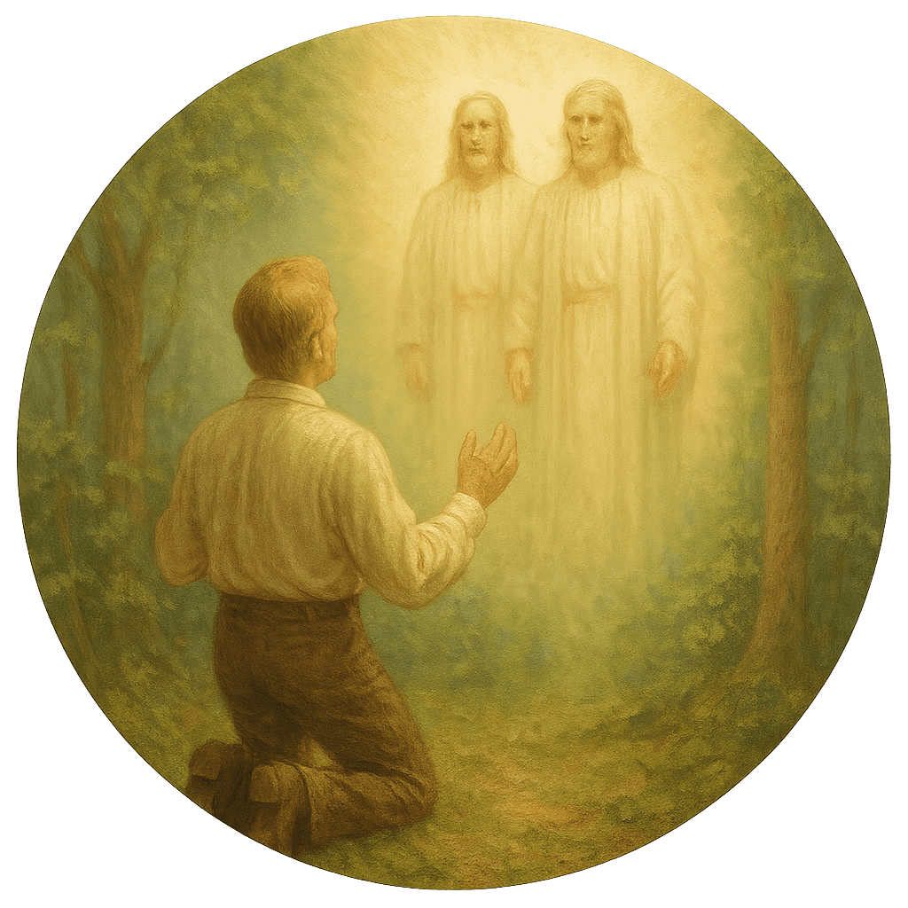

Este jogo foi criado com o objetivo de ensinar e reforçar os princípios da Restauração do Evangelho de Jesus Cristo de maneira divertida e interativa.
Através da mecânica de memória, queremos incentivar famílias, jovens e crianças a se lembrarem de eventos, símbolos e ensinamentos importantes relacionados à Primeira Visão, ao profeta Joseph Smith e à restauração da Igreja de Jesus Cristo na Terra.
Projeto idealizado e desenvolvido por Edmozer Cavalcante.
Saiba mais ou entre em contato: LinkedIn
Este projeto foi desenvolvido combinando programação tradicional com assistência de IA, demonstrando o potencial dessa parceria moderna. Utilizamos:
© 2025 — Este projeto é um esforço pessoal e sem fins lucrativos.
Desenvolvido com auxílio de IA em um processo de programação inovador.